<title>ZoomSlidesPicker 判断シート</title>
<style>
  :root {
    --paper: #f3f3f2;
    --surface: #ffffff;
    --ink: #171717;
    --ink-2: #4f4f4f;
    --rule: #d8d8d8;
    --accent: #2c5d88;
    --accent-soft: #e7eef6;
    --on-accent: #ffffff;
    --danger: #a02c2c;
  }
  @media (prefers-color-scheme: dark) {
    :root:not([data-theme="light"]) {
      color-scheme: dark;
      --paper: #131313;
      --surface: #1c1c1c;
      --ink: #ececec;
      --ink-2: #a9a9a9;
      --rule: #353535;
      --accent: #90bbe6;
      --accent-soft: #1d2b39;
      --on-accent: #0e1822;
      --danger: #f0a3a3;
    }
  }
  :root[data-theme="dark"] {
    color-scheme: dark;
    --paper: #131313;
    --surface: #1c1c1c;
    --ink: #ececec;
    --ink-2: #a9a9a9;
    --rule: #353535;
    --accent: #90bbe6;
    --accent-soft: #1d2b39;
    --on-accent: #0e1822;
    --danger: #f0a3a3;
  }

  body {
    margin: 0;
    background: var(--paper);
    color: var(--ink);
    font-family: -apple-system, BlinkMacSystemFont, "Hiragino Sans", "Hiragino Kaku Gothic ProN", "Noto Sans JP", "Yu Gothic UI", Meiryo, sans-serif;
    font-size: 15px;
    line-height: 1.75;
  }
  .wrap { max-width: 760px; margin: 0 auto; padding: 0 16px; }
  .sr-only { position: absolute; width: 1px; height: 1px; overflow: hidden; clip: rect(0 0 0 0); white-space: nowrap; }
  :focus-visible { outline: 2px solid var(--accent); outline-offset: 2px; }
  h1, h2, h3 { text-wrap: balance; }
  p { margin: 0 0 12px; }
  ul, ol { margin: 0; padding-left: 1.25em; }
  li + li { margin-top: 6px; }
  code { font-family: ui-monospace, "SF Mono", Menlo, monospace; font-size: 0.9em; }
  .muted { color: var(--ink-2); }
  .num { font-variant-numeric: tabular-nums; }

  .top {
    position: sticky;
    top: env(safe-area-inset-top, 0px);
    z-index: 2;
    background: var(--paper);
    border-bottom: 1px solid var(--rule);
  }
  .top .wrap { display: flex; flex-wrap: wrap; justify-content: space-between; gap: 4px 16px; padding-block: 10px; }
  .top .round { margin: 0; font-size: 13px; color: var(--ink-2); }
  #progress { font-size: 13px; color: var(--ink-2); font-variant-numeric: tabular-nums; }
  #save { font-size: 13px; color: var(--ink-2); }
  #save.err { color: var(--danger); }

  header.intro { padding-block: 28px 8px; }
  h1 { font-size: 26px; line-height: 1.3; margin: 0 0 12px; font-weight: 700; letter-spacing: -0.01em; }
  .lede { font-size: 16px; margin-bottom: 18px; }
  blockquote.request {
    margin: 0 0 24px;
    padding: 12px 16px;
    border-left: 3px solid var(--rule);
    color: var(--ink-2);
  }
  blockquote.request p { margin: 0 0 4px; }
  .findings { margin-bottom: 8px; }
  .findings h2, .decided h2, .other h2, .verify h2, .next h2 { font-size: 16px; margin: 28px 0 10px; font-weight: 700; }

  section.q { padding-block: 28px; border-top: 1px solid var(--rule); }
  .q-title { display: flex; align-items: baseline; gap: 10px; margin: 0 0 6px; font-size: 19px; line-height: 1.4; font-weight: 700; }
  .qid { font-size: 13px; color: var(--ink-2); font-variant-numeric: tabular-nums; font-weight: 500; letter-spacing: 0.02em; }
  .ctx { color: var(--ink-2); margin-bottom: 16px; }
  .ctx q { quotes: "「" "」"; }
  fieldset.opts { border: 0; margin: 0; padding: 0; min-width: 0; display: grid; gap: 12px; }
  .opt {
    display: grid;
    gap: 10px;
    padding: 14px;
    background: var(--surface);
    border: 1px solid var(--rule);
    border-radius: 8px;
  }
  .opt:has(input:checked) { border-color: var(--accent); box-shadow: inset 0 0 0 1px var(--accent); }
  .opt label { display: grid; grid-template-columns: auto 1fr; gap: 0 12px; align-items: start; cursor: pointer; }
  .opt input { margin: 6px 0 0; width: 18px; height: 18px; accent-color: var(--accent); }
  .opt-title { font-weight: 700; }
  .opt-desc { display: block; font-weight: 400; color: var(--ink-2); margin-top: 2px; }
  .opt-why { display: block; margin-top: 4px; font-size: 14px; }
  .rec {
    display: inline-block;
    margin-left: 8px;
    padding: 0 6px;
    font-size: 12px;
    font-weight: 600;
    line-height: 1.6;
    color: var(--accent);
    border: 1px solid var(--accent);
    border-radius: 4px;
    vertical-align: 1px;
  }
  figure.shots { margin: 0; display: grid; gap: 10px; }
  figure.shots figcaption { font-size: 13px; color: var(--ink-2); }
  button.zoomable {
    all: unset;
    display: block;
    cursor: zoom-in;
    max-width: 100%;
    border-radius: 6px;
  }
  button.zoomable img,
  figure img {
    display: block;
    width: 100%;
    max-width: 100%;
    height: auto;
    background: #ffffff;
    border: 1px solid var(--rule);
    border-radius: 6px;
  }
  .memo { margin-top: 14px; }
  .memo label { display: block; font-size: 13px; color: var(--ink-2); margin-bottom: 4px; }
  textarea {
    display: block;
    width: 100%;
    box-sizing: border-box;
    font: inherit;
    color: var(--ink);
    background: var(--surface);
    border: 1px solid var(--rule);
    border-radius: 6px;
    padding: 8px 10px;
    resize: vertical;
  }
  .note { font-size: 14px; color: var(--ink-2); margin-top: 10px; }

  dialog.zoom { border: 0; padding: 0; background: transparent; max-width: min(96vw, 1400px); }
  dialog.zoom::backdrop { background: rgba(0, 0, 0, 0.72); }
  dialog.zoom .zoom-box { display: grid; gap: 8px; }
  dialog.zoom img { display: block; width: 100%; height: auto; background: #ffffff; border-radius: 6px; }
  dialog.zoom .zoom-bar { display: flex; justify-content: space-between; align-items: center; gap: 12px; color: #f4f4f4; font-size: 14px; }
  dialog.zoom button {
    font: inherit;
    padding: 6px 12px;
    border-radius: 6px;
    border: 1px solid #f4f4f4;
    background: transparent;
    color: #f4f4f4;
    cursor: pointer;
  }

  .decided ol, .decided ul { padding-left: 1.4em; }
  .verify ul { color: var(--ink-2); }
  .other textarea { min-height: 96px; }
  .copy-row { display: flex; flex-wrap: wrap; align-items: center; gap: 12px; margin-top: 12px; }
  .btn {
    font: inherit;
    padding: 8px 16px;
    border-radius: 6px;
    border: 1px solid var(--accent);
    background: var(--accent);
    color: var(--on-accent);
    cursor: pointer;
  }
  .btn:disabled { opacity: 0.5; cursor: default; }
  #copy-out { margin-top: 12px; min-height: 180px; font-size: 13px; line-height: 1.6; font-family: ui-monospace, "SF Mono", Menlo, monospace; }
  footer.next { padding-block: 24px 48px; border-top: 1px solid var(--rule); }

  @media (prefers-reduced-motion: reduce) { * { scroll-behavior: auto !important; } }
</style>

<header class="top">
  <div class="wrap">
    <p class="round">ラウンド 1 ・ 仕様の前の判断</p>
    <div class="status">
      <span id="progress">回答 0 / 13</span>
      <span id="save" role="status" aria-live="polite">保存先を確かめています…</span>
    </div>
  </div>
</header>

<main class="wrap">
  <header class="intro">
    <h1>ZoomSlidesPicker 判断シート</h1>
    <p class="lede">仕様を書く前に決めることを 13 問にまとめました。推奨が先頭にあります。選ぶと自動で保存されます。すべて終わったら、チャットに「回答しました」と書いてください。こちらで読み込みます。</p>
    <blockquote class="request">
      <p>あなたの依頼（原文）</p>
      <p>zoom,sharepointのビデオを先生がスライドで授業動画をリモートで行なっている時にスライドが変更されたら自動的にスクリーンショットする</p>
      <p>最初に特定部分だけクリッピングする？</p>
      <p>メモリとかも節約できると嬉しい。</p>
      <p>先生が動画を出している時に動画が再生されているものをキャプチャするとその部分だけめちゃくちゃ多くなりそう</p>
      <p>N秒間に一回確認するとか？</p>
      <p>具体化してほしい</p>
    </blockquote>
  </header>

  <section class="findings" aria-labelledby="h-findings">
    <h2 id="h-findings">分かったこと</h2>
    <ul>
      <li>スライドは通常のスクリーンショットで写る（あなたの報告）。防止設定が有効な授業では、どの方式でも撮れないので、黒や灰色を検出して知らせます。</li>
      <li>Mac で窓を指定して撮ると、他の窓に重ねられていても、その窓の中身が撮れました（R1-3 の 2 枚）。画面の一部を撮ると、重なった窓が写ります。</li>
      <li>「N 秒ごとに確認して、変わったら保存」をそのまま使うと、2 秒ごとの場合、動画中に 9 件、Web カメラ中に 13 件保存されました。変化が止まってから保存する方式では、動画中は 0 件、Web カメラ中はスライドの変化 2 件だけでした。</li>
      <li>動く領域を比較から外さない方式では、Web カメラが映っている間、スライドの変化を 1 件も保存しませんでした。</li>
      <li>Swift は Windows で動かないため、候補から外しました。</li>
    </ul>
    <p class="note">サンプルは、架空の授業の画面（fixture）から作りました。実際の授業の画面ではありません。</p>
  </section>

  <form id="questions" novalidate>

    <section class="q" data-q="R1-1" data-kind="radio" aria-labelledby="t-R1-1">
      <h2 class="q-title" id="t-R1-1"><span class="qid">R1-1</span>作り方</h2>
      <p class="ctx">Mac と Windows の両方で動かします。Swift は Windows で使えないので外しています。</p>
      <fieldset class="opts">
        <legend class="sr-only">作り方</legend>
        <div class="opt">
          <label><input type="radio" name="R1-1" value="B" data-label="B　Tauri v2">
            <span><span class="opt-title">B　Tauri v2<span class="rec">推奨</span></span>
              <span class="opt-desc">Rust でキャプチャと判定、React で UI。既存の Tauri アプリ（happydeck など）と同じ作り。キャプチャは xcap。</span>
              <span class="opt-why">Mac で動作を確かめたのはこの方式だけ。Mac では約 55 ms／枚、CPU 平均 0.8%、メモリ約 36 MB。Windows は R1-2 の結果次第。</span>
            </span>
          </label>
          <figure class="shots">
            <button type="button" class="zoomable" data-src="assets/xcap-slide3-video.png" data-alt="窓キャプチャで撮った、台本のスライド 3（動画の枠）">
              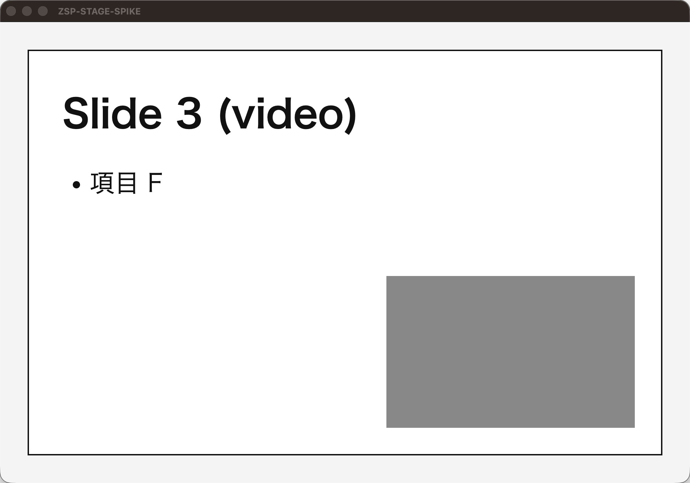
            </button>
            <button type="button" class="zoomable" data-src="assets/xcap-slide1-after.png" data-alt="同じ窓をもう一度撮った。台本のスライド 1 に戻った状態">
              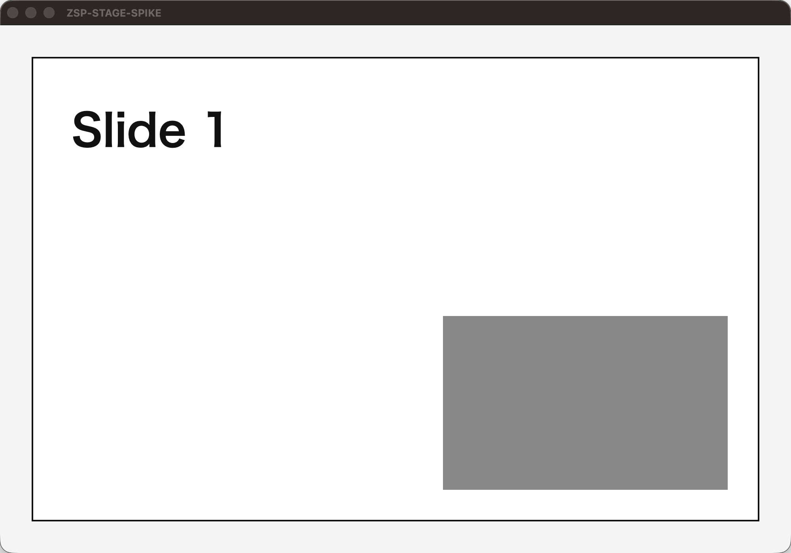
            </button>
            <figcaption>窓キャプチャ（xcap）。上がスライド 3、下がスライド 1 に戻った時点。台本の切り替えを順に検出した。</figcaption>
          </figure>
        </div>
        <div class="opt">
          <label><input type="radio" name="R1-1" value="D" data-label="D　Python（mss と OpenCV）">
            <span><span class="opt-title">D　Python（mss と OpenCV）</span>
              <span class="opt-desc">最も速く作れる。テンプレートのテスト（pytest）がそのまま使える。Windows で窓を指定して撮るには別の API が要る。未計測。</span>
            </span>
          </label>
        </div>
        <div class="opt">
          <label><input type="radio" name="R1-1" value="C" data-label="C　ブラウザのページ（getDisplayMedia）">
            <span><span class="opt-title">C　ブラウザのページ（getDisplayMedia）</span>
              <span class="opt-desc">インストール不要。ただし、タブが裏に回って 5 分以上経つと、Chrome はタイマーを 1 分に 1 回へ間引きます（Chrome の仕様）。授業中ずっと裏で動かす用途には向かない。未計測。</span>
            </span>
          </label>
        </div>
      </fieldset>
      <div class="memo"><label for="memo-R1-1">メモ（任意）</label><textarea id="memo-R1-1" rows="2"></textarea></div>
    </section>

    <section class="q" data-q="R1-2" data-kind="radio" aria-labelledby="t-R1-2">
      <h2 class="q-title" id="t-R1-2"><span class="qid">R1-2</span>Windows で実機テストできるか</h2>
      <p class="ctx">Windows の窓キャプチャは、xcap の既定の方式がまだ分かりません（GPU で描いた窓を正しく撮れるかも未確認）。実機がないと決められません。</p>
      <fieldset class="opts">
        <legend class="sr-only">Windows の実機</legend>
        <div class="opt">
          <label><input type="radio" name="R1-2" value="a" data-label="a　実機がある">
            <span><span class="opt-title">a　実機がある（研究室の Windows マシンなど）<span class="rec">推奨</span></span>
              <span class="opt-desc">窓キャプチャの既定と wgc を、GPU で描いた窓で比べられる。</span>
            </span>
          </label>
        </div>
        <div class="opt">
          <label><input type="radio" name="R1-2" value="b" data-label="b　ない">
            <span><span class="opt-title">b　ない</span>
              <span class="opt-desc">Windows は合成データのテストだけ。実キャプチャは「未検証」と明記して進める。</span>
            </span>
          </label>
        </div>
        <div class="opt">
          <label><input type="radio" name="R1-2" value="c" data-label="c　後で用意する">
            <span><span class="opt-title">c　後で用意する</span>
              <span class="opt-desc">Round 2 の前に、Windows の確認を入れる。</span>
            </span>
          </label>
        </div>
      </fieldset>
      <div class="memo"><label for="memo-R1-2">メモ（任意）</label><textarea id="memo-R1-2" rows="2"></textarea></div>
    </section>

    <section class="q" data-q="R1-3" data-kind="radio" aria-labelledby="t-R1-3">
      <h2 class="q-title" id="t-R1-3"><span class="qid">R1-3</span>撮る対象</h2>
      <p class="ctx">「最初に特定部分だけクリッピングする？」への答えです。窓を指定すると、窓が重なっていても中身を撮れます。画面の一部は実装が単純です。前回の推奨は b でしたが、Mac での確認で a に変えました。</p>
      <fieldset class="opts">
        <legend class="sr-only">撮る対象</legend>
        <div class="opt">
          <label><input type="radio" name="R1-3" value="a" data-label="a　窓を指定して撮る">
            <span><span class="opt-title">a　窓を指定して撮る<span class="rec">推奨</span></span>
              <span class="opt-desc">重なりに強い。Windows の窓キャプチャは R1-2 の結果次第。</span>
              <span class="opt-why">この写真は、他の窓に重ねられた状態で窓だけを撮ったもの。</span>
            </span>
          </label>
          <figure class="shots">
            <button type="button" class="zoomable" data-src="assets/r1-3-window.png" data-alt="窓を指定して撮った結果。重なった窓の影響を受けていない">
              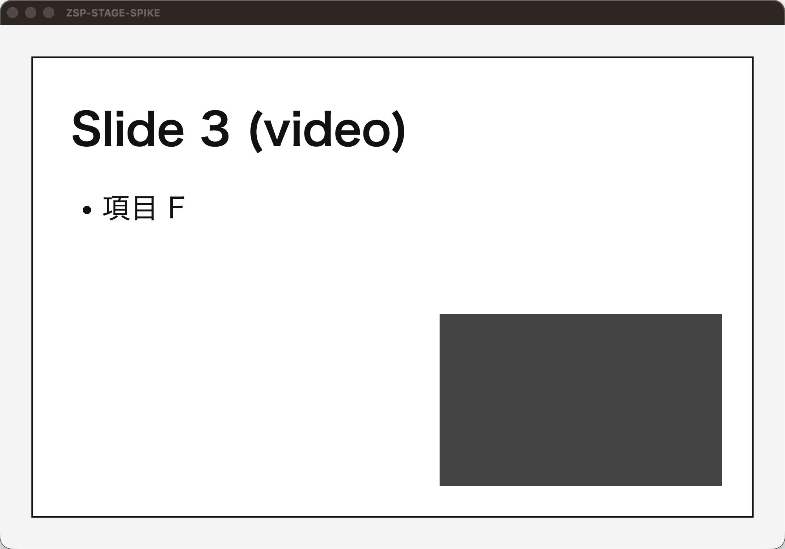
            </button>
            <figcaption>窓を指定した結果（右）。</figcaption>
          </figure>
        </div>
        <div class="opt">
          <label><input type="radio" name="R1-3" value="b" data-label="b　画面の一部を撮る">
            <span><span class="opt-title">b　画面の一部を撮る</span>
              <span class="opt-desc">実装が単純。前に出た窓が写る。窓を動かしたら範囲を選び直す。</span>
            </span>
          </label>
          <figure class="shots">
            <button type="button" class="zoomable" data-src="assets/r1-3-region.png" data-alt="画面の一部を撮った結果。重なった窓が写っている">
              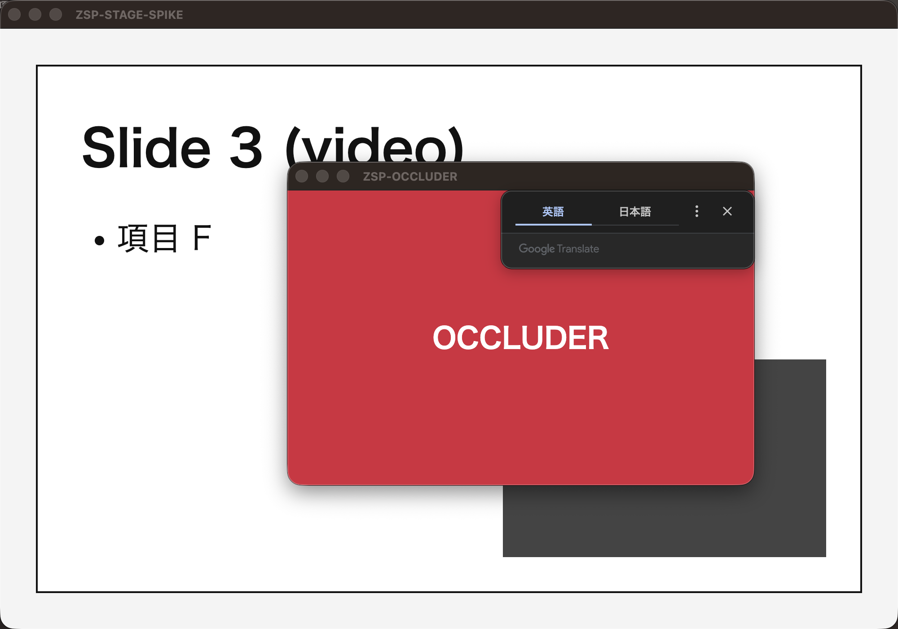
            </button>
            <figcaption>画面の一部を撮った結果。前に出た窓（赤いウィンドウ）が写っている。</figcaption>
          </figure>
        </div>
      </fieldset>
      <div class="memo"><label for="memo-R1-3">メモ（任意）</label><textarea id="memo-R1-3" rows="2"></textarea></div>
    </section>

    <section class="q" data-q="R1-4" data-kind="radio" aria-labelledby="t-R1-4">
      <h2 class="q-title" id="t-R1-4"><span class="qid">R1-4</span>SharePoint の映像</h2>
      <p class="ctx">「zoom,sharepointのビデオを…」の、SharePoint の部分です。映像がライブ配信か、録画の再生かで扱いが変わります。</p>
      <fieldset class="opts">
        <legend class="sr-only">SharePoint の映像</legend>
        <div class="opt">
          <label><input type="radio" name="R1-4" value="a" data-label="a　どちらも画面キャプチャ">
            <span><span class="opt-title">a　ライブも録画の再生も、画面キャプチャで撮る<span class="rec">推奨</span></span>
              <span class="opt-desc">同じ仕組みで撮れる。録画の再生画面に保護がかかっているかは未確認。</span>
            </span>
          </label>
        </div>
        <div class="opt">
          <label><input type="radio" name="R1-4" value="b" data-label="b　録画はファイルから抽出">
            <span><span class="opt-title">b　ライブだけ画面キャプチャし、録画はファイルから抽出する</span>
              <span class="opt-desc">画質と確実性で勝る。ただし別の仕組みを作る。v2 の候補。</span>
            </span>
          </label>
        </div>
        <div class="opt">
          <label><input type="radio" name="R1-4" value="c" data-label="c　分からない">
            <span><span class="opt-title">c　分からない（次の授業で確認する）</span></span>
          </label>
        </div>
      </fieldset>
      <div class="memo"><label for="memo-R1-4">メモ（任意）</label><textarea id="memo-R1-4" rows="2"></textarea></div>
    </section>

    <section class="q" data-q="R1-5" data-kind="radio" aria-labelledby="t-R1-5">
      <h2 class="q-title" id="t-R1-5"><span class="qid">R1-5</span>動画が再生されている間</h2>
      <p class="ctx">「先生が動画を出している時に動画が再生されているものをキャプチャするとその部分だけめちゃくちゃ多くなりそう」への答えです。サンプルはスライド 3 の動画（22.5 秒から 41.4 秒）を使っています。</p>
      <fieldset class="opts">
        <legend class="sr-only">動画が再生されている間</legend>
        <div class="opt">
          <label><input type="radio" name="R1-5" value="a" data-label="a　動画の領域の変化は保存しない">
            <span><span class="opt-title">a　動画の領域の変化は保存しない（止まった後の静止画も含む）<span class="rec">推奨</span></span>
              <span class="opt-desc">動画中は 0 件。動画の前の状態が 1 枚残る。</span>
              <span class="opt-why">枚数が増えず、動画の途中の映像も残らない。</span>
            </span>
          </label>
          <figure class="shots">
            <button type="button" class="zoomable" data-src="assets/montage_P2.png" data-alt="既定の方式で保存された 6 件">
              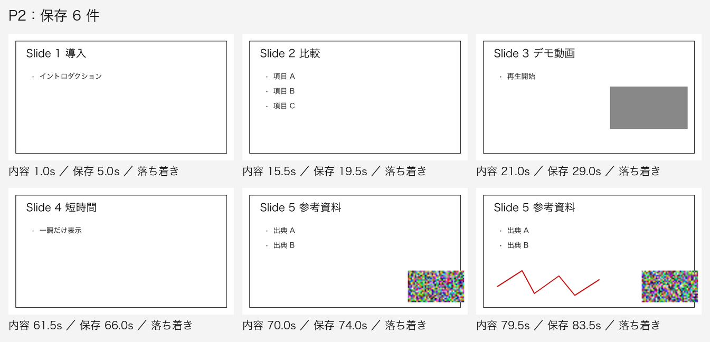
            </button>
            <figcaption>既定の方式（a）。保存された 6 件。動画中の保存はない。</figcaption>
          </figure>
        </div>
        <div class="opt">
          <label><input type="radio" name="R1-5" value="b" data-label="b　止まってから 1 枚">
            <span><span class="opt-title">b　動画の最中は保存せず、止まって静止したら 1 枚保存する</span>
              <span class="opt-desc">動画が止まった後の見た目が 1 枚増える（fixture で 1 件）。</span>
            </span>
          </label>
          <figure class="shots">
            <button type="button" class="zoomable" data-src="assets/montage_P2-adaptive.png" data-alt="止まった後の動画の見た目を含めて保存された 7 件">
              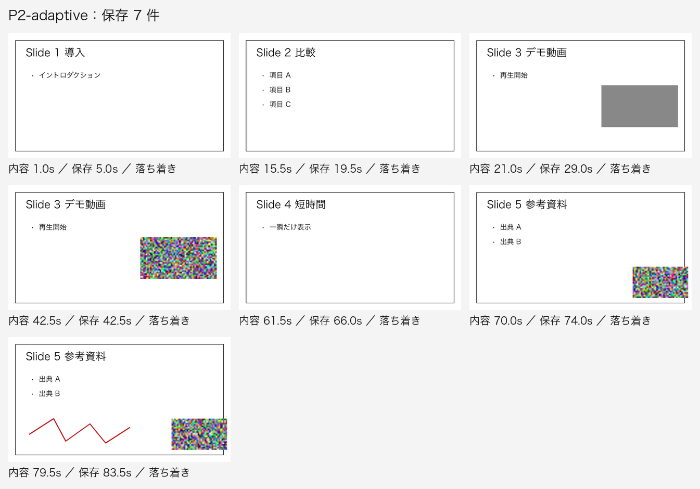
            </button>
            <figcaption>b の結果。動画が止まった後に 1 件増えている。</figcaption>
          </figure>
        </div>
        <div class="opt">
          <label><input type="radio" name="R1-5" value="c" data-label="c　動画中も 2 秒ごと">
            <span><span class="opt-title">c　動画の最中も 2 秒ごとに保存する</span>
              <span class="opt-desc">一定間隔の保存が残る。ただし動画中に 9 件増える。</span>
            </span>
          </label>
          <figure class="shots">
            <button type="button" class="zoomable" data-src="assets/montage_P2-periodic.png" data-alt="動画中も 2 秒ごとに保存された 26 件">
              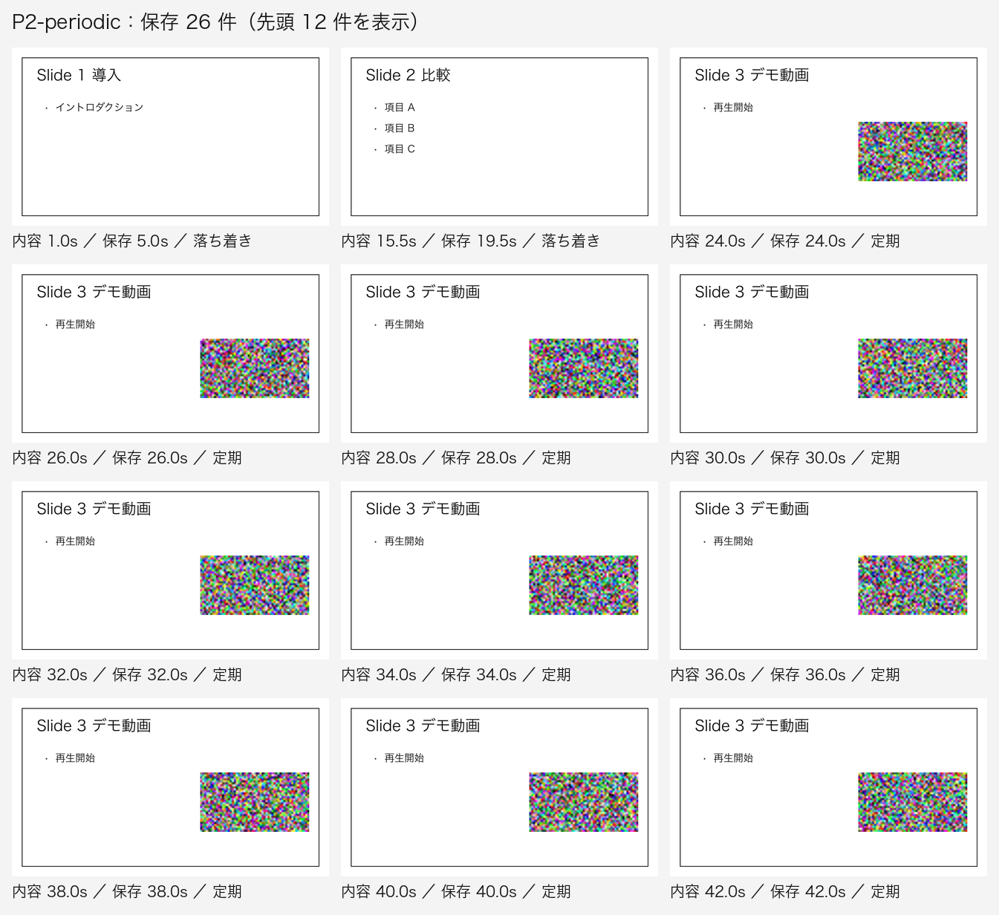
            </button>
            <figcaption>c の結果。動画中の映像が 2 秒ごとに入る。</figcaption>
          </figure>
        </div>
      </fieldset>
      <figure class="shots" style="margin-top:16px">
        <button type="button" class="zoomable" data-src="assets/montage_P0.png" data-alt="最初の案（2 秒ごとに確認し、変わったら保存）の 30 件">
          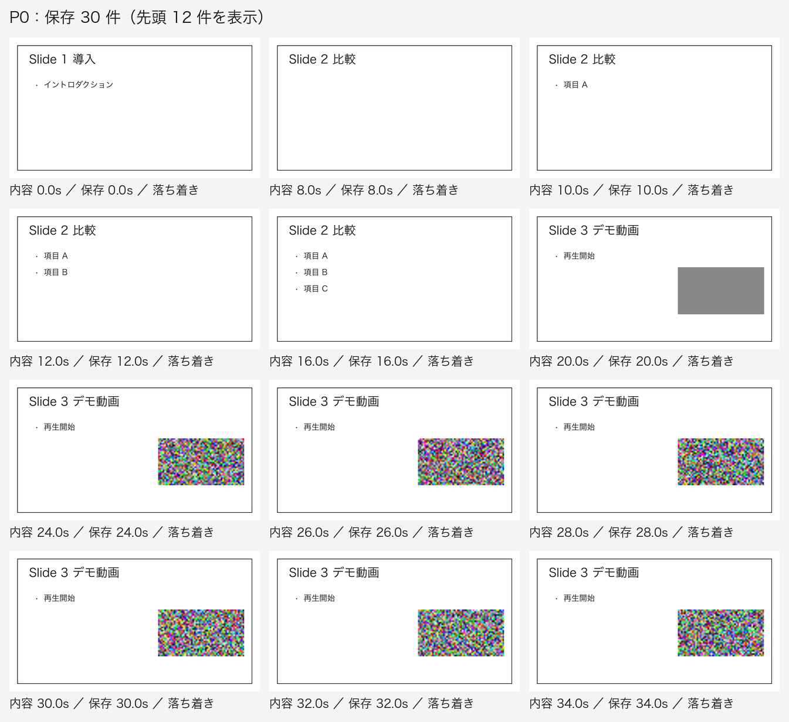
        </button>
        <figcaption>比較用：最初の案（2 秒ごとに確認し、変わったら保存）。30 件のうち、動画中 9 件、Web カメラ中 13 件。</figcaption>
      </figure>
      <div class="memo"><label for="memo-R1-5">メモ（任意）</label><textarea id="memo-R1-5" rows="2"></textarea></div>
    </section>

    <section class="q" data-q="R1-6" data-kind="radio" aria-labelledby="t-R1-6">
      <h2 class="q-title" id="t-R1-6"><span class="qid">R1-6</span>同じスライドに追記されたとき</h2>
      <p class="ctx">箇条書きが順に出る、先生がペンで書き込む、などの途中の変化の扱いです。サンプルは、スライド 2（箇条書き 3 つ、3 秒おき）と、スライド 5 の箇条書きとペンの書き込みです。</p>
      <fieldset class="opts">
        <legend class="sr-only">同じスライドの追記</legend>
        <div class="opt">
          <label><input type="radio" name="R1-6" value="a" data-label="a　最終状態だけ">
            <span><span class="opt-title">a　最終状態だけ残す<span class="rec">推奨</span></span>
              <span class="opt-desc">5 秒以上止まるまでの追記は 1 枚にまとめる。スライド 2 は 1 枚になった。</span>
              <span class="opt-why">スライドの最後の状態が残る。途中の段階は残らない。</span>
            </span>
          </label>
          <figure class="shots">
            <button type="button" class="zoomable" data-src="assets/montage_P2.png" data-alt="最終状態だけ残した 6 件">
              
            </button>
            <figcaption>a の結果。スライド 2 の箇条書き 3 つは 1 枚（15.5 秒の状態）。</figcaption>
          </figure>
        </div>
        <div class="opt">
          <label><input type="radio" name="R1-6" value="b" data-label="b　段階ごとに全部">
            <span><span class="opt-title">b　段階ごとに全部残す</span>
              <span class="opt-desc">追記のたびに 1 枚。fixture では 9 件（スライド 2 で 3 件）。</span>
            </span>
          </label>
          <figure class="shots">
            <button type="button" class="zoomable" data-src="assets/montage_P2-each.png" data-alt="段階ごとに保存された 9 件">
              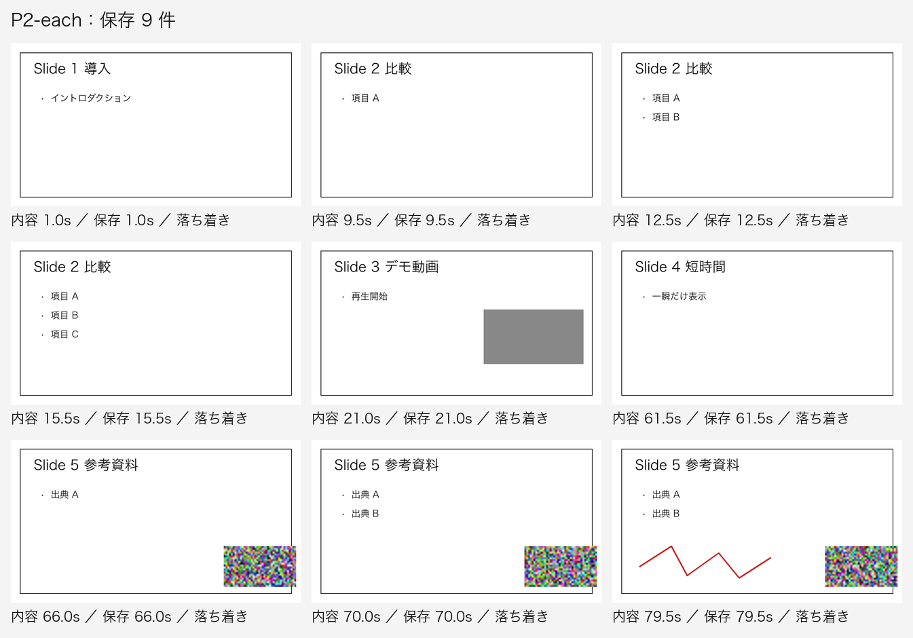
            </button>
            <figcaption>b の結果。</figcaption>
          </figure>
        </div>
        <div class="opt">
          <label><input type="radio" name="R1-6" value="c" data-label="c　最初の状態だけ">
            <span><span class="opt-title">c　最初の状態だけ残す</span>
              <span class="opt-desc">そのスライドで最初に落ち着いた状態だけ。後の追記は残らない。スライド 2 は箇条書き 1 つ目の状態だけ。</span>
            </span>
          </label>
          <figure class="shots">
            <button type="button" class="zoomable" data-src="assets/montage_P2-first.png" data-alt="最初の状態だけ保存された 6 件">
              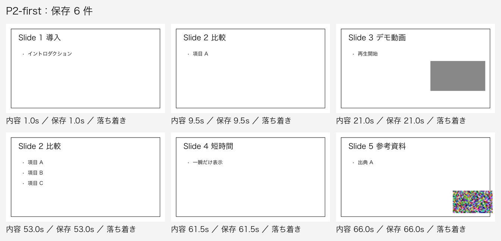
            </button>
            <figcaption>c の結果。スライド 5 も、ペンの書き込みが残らない。</figcaption>
          </figure>
        </div>
      </fieldset>
      <div class="memo"><label for="memo-R1-6">メモ（任意）</label><textarea id="memo-R1-6" rows="2"></textarea></div>
    </section>

    <section class="q" data-q="R1-7" data-kind="radio" aria-labelledby="t-R1-7">
      <h2 class="q-title" id="t-R1-7"><span class="qid">R1-7</span>前のスライドに戻ったとき</h2>
      <p class="ctx">サンプルの授業は、スライド 2 → スライド 3 → スライド 2 の順に表示します。</p>
      <fieldset class="opts">
        <legend class="sr-only">前のスライドに戻ったとき</legend>
        <div class="opt">
          <label><input type="radio" name="R1-7" value="a" data-label="a　保存しない">
            <span><span class="opt-title">a　保存しない（時刻だけ記録する）<span class="rec">推奨</span></span>
              <span class="opt-desc">同じ内容が保存済みなら、もう保存しない。</span>
            </span>
          </label>
          <figure class="shots">
            <button type="button" class="zoomable" data-src="assets/montage_P2.png" data-alt="戻った回は保存されず、6 件のまま">
              
            </button>
            <figcaption>a の結果。スライド 2 に戻った回は入っていない（6 件）。</figcaption>
          </figure>
        </div>
        <div class="opt">
          <label><input type="radio" name="R1-7" value="b" data-label="b　もう一度保存">
            <span><span class="opt-title">b　もう一度保存する</span>
              <span class="opt-desc">戻るたびに 1 枚増える。fixture では 1 件増えた。</span>
            </span>
          </label>
          <figure class="shots">
            <button type="button" class="zoomable" data-src="assets/montage_P2-revisit-save.png" data-alt="戻った回も保存された 7 件">
              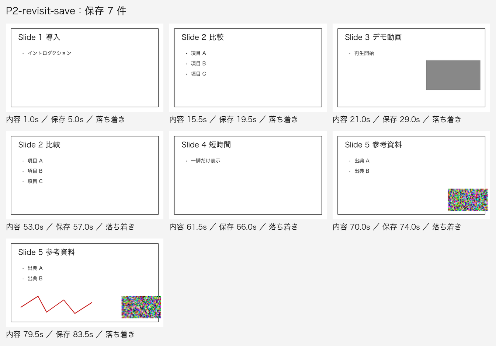
            </button>
            <figcaption>b の結果。スライド 2 に戻った回が入っている（7 件）。</figcaption>
          </figure>
        </div>
      </fieldset>
      <div class="memo"><label for="memo-R1-7">メモ（任意）</label><textarea id="memo-R1-7" rows="2"></textarea></div>
    </section>

    <section class="q" data-q="R1-8" data-kind="radio" aria-labelledby="t-R1-8">
      <h2 class="q-title" id="t-R1-8"><span class="qid">R1-8</span>保存形式</h2>
      <p class="ctx">サンプルの 1 枚は、PNG で平均 58 KB でした（文字と図が少ないため）。実際の資料は文字や図が多く、大きくなる見込みです。</p>
      <fieldset class="opts">
        <legend class="sr-only">保存形式</legend>
        <div class="opt">
          <label><input type="radio" name="R1-8" value="a" data-label="a　PNG と終了時の PDF">
            <span><span class="opt-title">a　PNG に加えて、終了時に PDF<span class="rec">推奨</span></span>
              <span class="opt-desc">画像は PNG で残し、終了時に 1 つの PDF にまとめる。</span>
            </span>
          </label>
        </div>
        <div class="opt">
          <label><input type="radio" name="R1-8" value="b" data-label="b　PNG のみ">
            <span><span class="opt-title">b　PNG のみ</span></span>
          </label>
        </div>
        <div class="opt">
          <label><input type="radio" name="R1-8" value="c" data-label="c　PDF のみ">
            <span><span class="opt-title">c　PDF のみ</span>
              <span class="opt-desc">後で 1 枚ずつ取り出しにくい。</span>
            </span>
          </label>
        </div>
      </fieldset>
      <div class="memo"><label for="memo-R1-8">メモ（任意）</label><textarea id="memo-R1-8" rows="2"></textarea></div>
    </section>

    <section class="q" data-q="R1-9" data-kind="check" aria-labelledby="t-R1-9">
      <h2 class="q-title" id="t-R1-9"><span class="qid">R1-9</span>v1 に入れる機能（複数選択）</h2>
      <p class="ctx">最初からチェックが入っているのは推奨です。外したい機能はチェックを外してください。</p>
      <fieldset class="opts">
        <legend class="sr-only">v1 に入れる機能</legend>
        <div class="opt"><label><input type="checkbox" name="R1-9" value="pause" checked data-label="一時停止"><span class="opt-title">一時停止</span></label></div>
        <div class="opt"><label><input type="checkbox" name="R1-9" value="undo" checked data-label="直前の保存を取り消す"><span class="opt-title">直前の保存を取り消す</span></label></div>
        <div class="opt"><label><input type="checkbox" name="R1-9" value="shot" checked data-label="今すぐ保存（ショートカット）"><span class="opt-title">今すぐ保存（ショートカット）</span></label></div>
        <div class="opt"><label><input type="checkbox" name="R1-9" value="count" checked data-label="保存枚数の表示"><span class="opt-title">保存枚数の表示</span></label></div>
        <div class="opt"><label><input type="checkbox" name="R1-9" value="mp4" checked data-label="mp4 から抽出するモード（テスト用）"><span class="opt-title">mp4 から抽出するモード（テスト用）</span><span class="opt-desc">fixture の mp4（88 秒、2 fps）に同じ判定をかけて確かめられる。</span></label></div>
        <div class="opt"><label><input type="checkbox" name="R1-9" value="list" data-label="保存一覧の画面"><span class="opt-title">保存一覧の画面</span><span class="opt-desc">Finder で足りる。</span></label></div>
        <div class="opt"><label><input type="checkbox" name="R1-9" value="ocr" data-label="文字認識（OCR）"><span class="opt-title">文字認識（OCR）</span></label></div>
        <div class="opt"><label><input type="checkbox" name="R1-9" value="sound" data-label="保存時の音"><span class="opt-title">保存時の音</span></label></div>
      </fieldset>
      <div class="memo"><label for="memo-R1-9">メモ（任意）</label><textarea id="memo-R1-9" rows="2"></textarea></div>
    </section>

    <section class="q" data-q="R1-10" data-kind="radio" aria-labelledby="t-R1-10">
      <h2 class="q-title" id="t-R1-10"><span class="qid">R1-10</span>画面の言語</h2>
      <p class="ctx">個人用なので、画面の言葉を選びます。</p>
      <fieldset class="opts">
        <legend class="sr-only">画面の言語</legend>
        <div class="opt">
          <label><input type="radio" name="R1-10" value="ja" data-label="日本語">
            <span><span class="opt-title">日本語<span class="rec">推奨</span></span>
              <span class="opt-desc">メニュー例：開始、一時停止、直前を取り消す。</span>
            </span>
          </label>
        </div>
        <div class="opt">
          <label><input type="radio" name="R1-10" value="en" data-label="英語">
            <span><span class="opt-title">英語</span>
              <span class="opt-desc">メニュー例：Start, Pause, Undo.</span>
            </span>
          </label>
        </div>
        <div class="opt">
          <label><input type="radio" name="R1-10" value="both" data-label="切り替えられる">
            <span><span class="opt-title">切り替えられる</span>
              <span class="opt-desc">設定画面で選ぶ。</span>
            </span>
          </label>
        </div>
      </fieldset>
      <div class="memo"><label for="memo-R1-10">メモ（任意）</label><textarea id="memo-R1-10" rows="2"></textarea></div>
    </section>

    <section class="q" data-q="R1-11" data-kind="radio" aria-labelledby="t-R1-11">
      <h2 class="q-title" id="t-R1-11"><span class="qid">R1-11</span>SPEC・ACCEPTANCE の言語</h2>
      <p class="ctx">承認するのはあなたなので、読みやすい言語を選びます。コード、コメント、コミットは英語にします（テンプレートの既定）。</p>
      <fieldset class="opts">
        <legend class="sr-only">SPEC と ACCEPTANCE の言語</legend>
        <div class="opt">
          <label><input type="radio" name="R1-11" value="ja" data-label="日本語">
            <span><span class="opt-title">日本語<span class="rec">推奨</span></span>
              <span class="opt-desc">例：「動く領域は比較から外す。」</span>
            </span>
          </label>
        </div>
        <div class="opt">
          <label><input type="radio" name="R1-11" value="en" data-label="英語（テンプレートの既定）">
            <span><span class="opt-title">英語（テンプレートの既定）</span>
              <span class="opt-desc">例：Moving regions are excluded from the comparison.</span>
            </span>
          </label>
        </div>
      </fieldset>
      <div class="memo"><label for="memo-R1-11">メモ（任意）</label><textarea id="memo-R1-11" rows="2"></textarea></div>
    </section>

    <section class="q" data-q="R1-12" data-kind="radio" aria-labelledby="t-R1-12">
      <h2 class="q-title" id="t-R1-12"><span class="qid">R1-12</span>判断の記録と確認の仕組みの置き場所</h2>
      <p class="ctx">いまは、<code>CLAUDE-section.md</code>（「GO が出るまで作らない」）が <code>.claude/CLAUDE.md</code> に入っていないので効いていません。<code>decision-sheet</code> も <code>.claude/skills/</code> の外にあるので、スキルとして呼び出せません。</p>
      <fieldset class="opts">
        <legend class="sr-only">記録と仕組みの置き場所</legend>
        <div class="opt">
          <label><input type="radio" name="R1-12" value="a" data-label="a　プロジェクト内に置く">
            <span><span class="opt-title">a　プロジェクト内に置く<span class="rec">推奨</span></span>
              <span class="opt-desc"><code>DECISIONS.md</code> をリポジトリ直下に置く。CLAUDE-section を <code>.claude/CLAUDE.md</code> に統合。<code>decision-sheet</code> を <code>.claude/skills/</code> に移す。</span>
              <span class="opt-why">この作業の判断はこのプロジェクトのもの。</span>
            </span>
          </label>
        </div>
        <div class="opt">
          <label><input type="radio" name="R1-12" value="b" data-label="b　スキルだけグローバル">
            <span><span class="opt-title">b　スキルだけグローバルに置く</span>
              <span class="opt-desc"><code>~/.claude/skills/decision-sheet/</code> に置く（全プロジェクトで使える）。規則と <code>DECISIONS.md</code> はプロジェクト内。</span>
            </span>
          </label>
        </div>
        <div class="opt">
          <label><input type="radio" name="R1-12" value="c" data-label="c　今のまま">
            <span><span class="opt-title">c　今のまま</span>
              <span class="opt-desc">規則もスキルも読まれない。記録も作らない。</span>
            </span>
          </label>
        </div>
      </fieldset>
      <div class="memo"><label for="memo-R1-12">メモ（任意）</label><textarea id="memo-R1-12" rows="2"></textarea></div>
    </section>

    <section class="q" data-q="R1-13" data-kind="radio" aria-labelledby="t-R1-13">
      <h2 class="q-title" id="t-R1-13"><span class="qid">R1-13</span>保存画像に写る動く領域（Web カメラ・動画）</h2>
      <p class="ctx">この画面で新しく出た質問です。保存画像は、保存した瞬間の画面をそのまま写します。Web カメラの映像（右下の枠）も入ります。サンプルは同じ瞬間（70 秒、箇条書き A・B）の 3 通りです。</p>
      <fieldset class="opts">
        <legend class="sr-only">保存画像の動く領域</legend>
        <div class="opt">
          <label><input type="radio" name="R1-13" value="b" data-label="b　灰色で塗る">
            <span><span class="opt-title">b　動く領域だけ灰色で塗る<span class="rec">推奨</span></span>
              <span class="opt-desc">判定に使った動く領域を塗る。誤判定だと、必要な部分まで塗られる。</span>
              <span class="opt-why">顔や動画の途中の映像を残さず、スライドだけが残る。</span>
            </span>
          </label>
          <figure class="shots">
            <button type="button" class="zoomable" data-src="assets/r1-13-grey.png" data-alt="動く領域を灰色で塗った保存画像">
              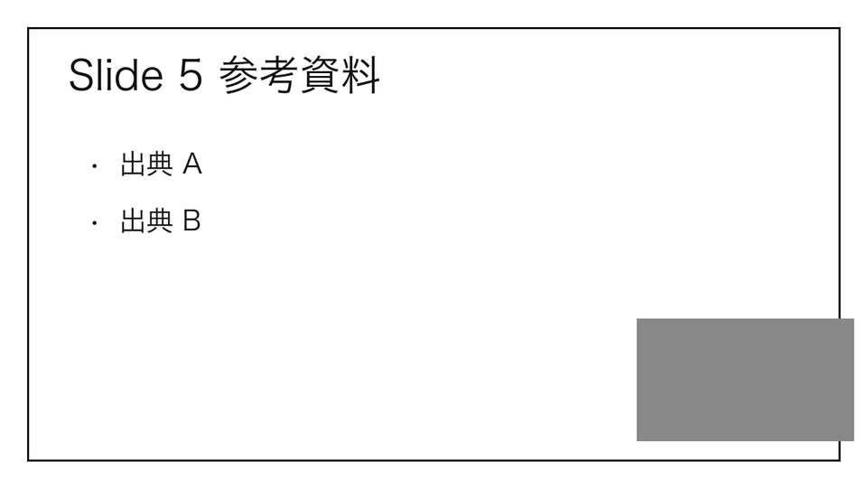
            </button>
          </figure>
        </div>
        <div class="opt">
          <label><input type="radio" name="R1-13" value="a" data-label="a　そのまま">
            <span><span class="opt-title">a　そのまま残す（画面どおり）</span>
              <span class="opt-desc">Web カメラが写っている場合、先生の顔も入る。</span>
            </span>
          </label>
          <figure class="shots">
            <button type="button" class="zoomable" data-src="assets/r1-13-as-is.png" data-alt="画面どおりの保存画像（Web カメラの枠を含む）">
              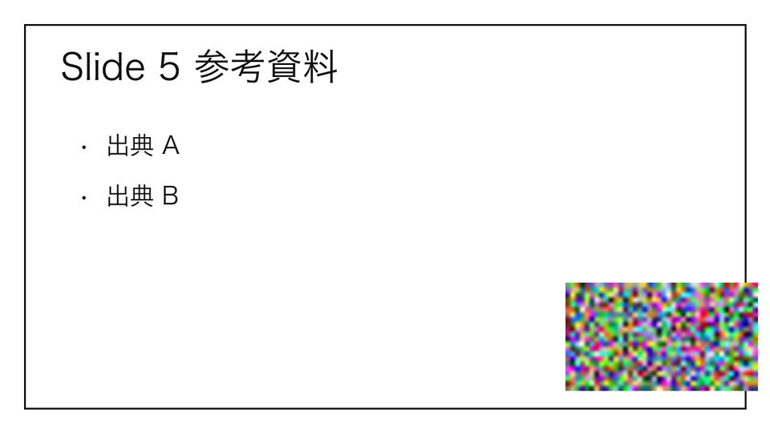
            </button>
          </figure>
        </div>
        <div class="opt">
          <label><input type="radio" name="R1-13" value="c" data-label="c　切り抜く">
            <span><span class="opt-title">c　動く領域を避けて、残る範囲だけ切り抜く</span>
              <span class="opt-desc">左の列（940 × 720）だけが残る。</span>
            </span>
          </label>
          <figure class="shots">
            <button type="button" class="zoomable" data-src="assets/r1-13-crop.png" data-alt="動く領域を避けて切り抜いた保存画像">
              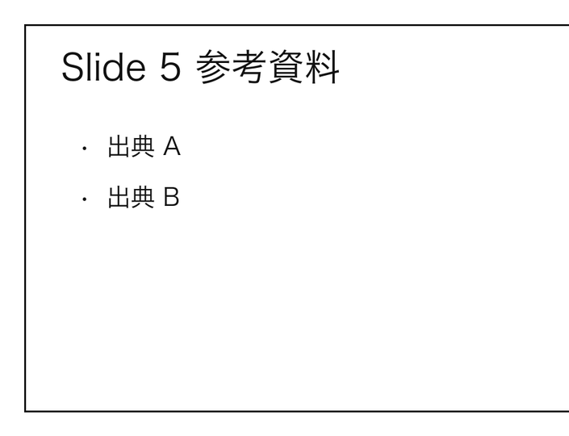
            </button>
          </figure>
        </div>
      </fieldset>
      <div class="memo"><label for="memo-R1-13">メモ（任意）</label><textarea id="memo-R1-13" rows="2"></textarea></div>
    </section>

    <p class="note">選ばずに文章だけ書くと、その質問の答えは「その他」として保存されます。</p>
  </form>

  <section class="decided" aria-labelledby="h-decided">
    <h2 id="h-decided">聞かずに決めたこと</h2>
    <p class="muted">変えたいものがあれば、下の「その他」に書いてください。</p>
    <ol>
      <li>変化は、比べた領域のうち何%のセルが変わったかで判定する（平均の差ではない）。動く領域は 1 セル分広げて、比較から外す。</li>
      <li>N 秒ごとに確認する方式は採用する。N 秒は比較の周期で、保存は変化が止まってから（既定 1 秒）。</li>
      <li>まとめる間隔（5 秒）と、落ち着きの時間（1 秒）は既定値。変えたいときは「その他」に書いてください。</li>
      <li>保存は実ピクセル（Retina は 2 倍）。</li>
      <li>開始と停止は手動。ウィンドウ名での自動開始は v1 に入れない。</li>
      <li>メモリ：解析に使うのは縮小画像（160 × 90 のグレー、1 枚 14 KB）と、保存済みスライドの指紋だけ。大きいのは一瞬のフルサイズの画面（窓 1000 × 700 pt を 2 倍で撮ると約 11 MB）で、保存する瞬間だけ PNG にする。前の「縮小画像 2 枚」の説明は、この点で不正確でした。</li>
      <li>検出の試作は Python（速さのため）。本体は採用した方式で作り直す。</li>
      <li>配布は当面、自分用（Mac と Windows）。署名と公証は後で決める。</li>
      <li><code>run.sh auto</code> は使わない（人間ゲートで止まる）。DB は使わない。</li>
      <li>コミットはローカルのみ。push はしない。コミットメッセージに帰属の行は入れない。</li>
    </ol>
  </section>

  <section class="verify" aria-labelledby="h-verify">
    <h2 id="h-verify">確かめた範囲</h2>
    <ul>
      <li>測った：Mac（macOS 26.5.2）での窓キャプチャ（xcap 0.9.8）。台本どおりの切り替えを検出した。CPU・メモリは、約 38 秒の実行中の平均。</li>
      <li>測っていない：Windows、Chrome の裏タブ、Python 版、実際の授業の録画、画面収録の許可がない状態の挙動（この環境は許可済み）。</li>
      <li>検出の正解は、fixture の時刻表から決めた。一致は設計どおりの動きの確認で、実際の授業での精度ではない。</li>
    </ul>
  </section>

  <section class="other" aria-labelledby="h-other">
    <h2 id="h-other">その他</h2>
    <p class="muted">質問にない意見、決めたことへの修正、見つけたこと。</p>
    <div class="memo"><label for="misc">自由記述</label><textarea id="misc" rows="4"></textarea></div>
  </section>

  <footer class="next">
    <p>保存は選ぶたびに行われます。保存できないときは、下の「回答をコピー」で控えを取ってください。</p>
    <p>すべて終わったら、チャットに「回答しました」と書いてください。決まったことを返し、<code>DECISIONS.md</code> に原文で書きます。</p>
    <div class="copy-row">
      <button type="button" class="btn" id="copy">回答をコピー</button>
      <span id="copy-note" class="muted" role="status"></span>
    </div>
    <textarea id="copy-out" readonly hidden aria-label="回答の控え"></textarea>
  </footer>
</main>

<dialog class="zoom" id="zoom" aria-labelledby="zoom-cap">
  <div class="zoom-box">
    
    <div class="zoom-bar">
      <span id="zoom-cap"></span>
      <button type="button" id="zoom-close">閉じる</button>
    </div>
  </div>
</dialog>

<script>
(function () {
  "use strict";

  var DOC_PATH = "answers/round1";
  var DRAFT_KEY = "zsp-decision-sheet-round1";
  var sections = Array.prototype.slice.call(document.querySelectorAll("section.q"));
  var main = document.querySelector("main");
  var progressEl = document.getElementById("progress");
  var statusEl = document.getElementById("save");
  var miscEl = document.getElementById("misc");
  var copyBtn = document.getElementById("copy");
  var copyNote = document.getElementById("copy-note");
  var copyOut = document.getElementById("copy-out");
  var dialog = document.getElementById("zoom");
  var zoomImg = document.getElementById("zoom-img");
  var zoomCap = document.getElementById("zoom-cap");

  var db = null;
  var doc = null;
  var loaded = false;
  var touched = false;
  var restoring = false;
  var timer = null;
  var inFlight = false;
  var again = false;
  var waitingForLoad = false;

  function setStatus(text, isError) {
    statusEl.textContent = text;
    statusEl.className = isError ? "err" : "";
  }

  function clock() {
    var d = new Date();
    return String(d.getHours()).padStart(2, "0") + ":" + String(d.getMinutes()).padStart(2, "0");
  }

  function sleep(ms) {
    return new Promise(function (resolve) { setTimeout(resolve, ms); });
  }

  function readQuestion(sec) {
    var q = sec.getAttribute("data-q");
    var kind = sec.getAttribute("data-kind");
    var inputs = sec.querySelectorAll('input[name="' + q + '"]');
    var memo = sec.querySelector("textarea").value.trim();
    var choice;
    if (kind === "check") {
      choice = Array.prototype.filter.call(inputs, function (i) { return i.checked; })
        .map(function (i) { return i.value; });
      if (choice.length === 0 && memo) choice = "other";
    } else {
      var picked = Array.prototype.find.call(inputs, function (i) { return i.checked; });
      choice = picked ? picked.value : (memo ? "other" : null);
    }
    return { choice: choice, note: memo };
  }

  function snapshot() {
    var body = {};
    sections.forEach(function (sec) {
      body[sec.getAttribute("data-q")] = readQuestion(sec);
    });
    body.misc = { choice: null, note: miscEl.value.trim() };
    body.updatedAt = new Date().toISOString();
    return body;
  }

  function answeredCount() {
    return sections.filter(function (sec) {
      var r = readQuestion(sec);
      if (sec.getAttribute("data-kind") === "check") {
        return sec.getAttribute("data-touched") === "1" || r.note !== "";
      }
      return r.choice !== null;
    }).length;
  }

  function refreshProgress() {
    progressEl.textContent = "回答 " + answeredCount() + " / " + sections.length;
  }

  function applyBody(data) {
    if (!data || typeof data !== "object") return;
    restoring = true;
    sections.forEach(function (sec) {
      var q = sec.getAttribute("data-q");
      var item = data[q];
      if (!item) return;
      var choices = Array.isArray(item.choice) ? item.choice : [item.choice];
      var inputs = sec.querySelectorAll('input[name="' + q + '"]');
      Array.prototype.forEach.call(inputs, function (i) {
        i.checked = choices.indexOf(i.value) !== -1;
      });
      if (sec.getAttribute("data-kind") === "check") {
        var defaults = Array.prototype.filter.call(inputs, function (i) { return i.defaultChecked; })
          .map(function (i) { return i.value; });
        if (JSON.stringify(defaults) !== JSON.stringify(choices)) sec.setAttribute("data-touched", "1");
      }
      sec.querySelector("textarea").value = typeof item.note === "string" ? item.note : "";
    });
    if (data.misc && typeof data.misc.note === "string") miscEl.value = data.misc.note;
    restoring = false;
    refreshProgress();
  }

  function writeDraft() {
    try { localStorage.setItem(DRAFT_KEY, JSON.stringify(snapshot())); } catch (e) { /* private window or blocked storage */ }
  }

  function applyDraft() {
    try {
      var raw = localStorage.getItem(DRAFT_KEY);
      if (raw) applyBody(JSON.parse(raw));
    } catch (e) { /* ignore */ }
  }

  function messageFor(code) {
    switch (code) {
      case "resource_exhausted": return "混み合っています。少し待ってから、もう一度選んでください。";
      case "quota_exceeded": return "保存できる量の上限に達しています。「回答をコピー」で控えを取ってください。";
      case "invalid_argument": return "保存できませんでした（形式の問題）。「回答をコピー」で控えを取ってください。";
      case "unavailable": return "通信が不安定で保存できませんでした。もう一度選んでください。";
      default: return "保存できませんでした。「回答をコピー」で控えを取ってください。";
    }
  }

  var LOST = { revoked: 1, not_granted: 1, capability_disabled: 1, capability_removed: 1, transform_error: 1 };

  async function tryWrite(body) {
    for (var attempt = 0; attempt < 2; attempt++) {
      try {
        await doc.set(body);
        return true;
      } catch (err) {
        var code = err && err.code;
        if (code === "unavailable" && attempt === 0) {
          await sleep(1500 + Math.random() * 1500);
          continue;
        }
        if (LOST[code]) {
          db = null;
          doc = null;
          setStatus("この画面では保存されません。「回答をコピー」で控えを取ってください。", true);
          writeDraft();
          return false;
        }
        setStatus(messageFor(code), true);
        return false;
      }
    }
    return false;
  }

  async function save() {
    timer = null;
    if (!doc) {
      writeDraft();
      return;
    }
    if (inFlight) {
      again = true;
      return;
    }
    inFlight = true;
    again = false;
    setStatus("保存しています…");
    var ok = await tryWrite(snapshot());
    inFlight = false;
    if (ok) setStatus("保存しました（" + clock() + "）");
    if (again) schedule();
  }

  function schedule() {
    refreshProgress();
    if (!loaded) {
      waitingForLoad = true;
      setStatus("保存先を確かめています…");
      return;
    }
    if (!doc) {
      writeDraft();
      return;
    }
    setStatus("未保存の変更があります");
    clearTimeout(timer);
    timer = setTimeout(save, 700);
  }

  function onEdit(e) {
    if (restoring) return;
    touched = true;
    var sec = e.target && e.target.closest ? e.target.closest("section.q") : null;
    if (sec) sec.setAttribute("data-touched", "1");
    schedule();
  }

  main.addEventListener("change", onEdit);
  main.addEventListener("input", onEdit);

  async function init() {
    var ns = null;
    try {
      ns = window.claude && typeof window.claude.use === "function" ? await window.claude.use("db") : null;
    } catch (e) {
      ns = null;
    }
    if (ns) {
      try {
        db = ns;
        doc = db.doc(DOC_PATH);
      } catch (e) {
        db = null;
        doc = null;
      }
    }
    if (doc) {
      try {
        var snap = await doc.get();
        if (snap.exists && !touched) applyBody(snap.data());
        setStatus("選ぶと自動で保存されます");
      } catch (e) {
        setStatus("保存済みの回答を読めませんでした。新しく選ぶと保存されます。", true);
      }
    } else {
      setStatus("この画面では保存されません。「回答をコピー」で控えを取ってください。", true);
      applyDraft();
    }
    loaded = true;
    refreshProgress();
    if (waitingForLoad) {
      waitingForLoad = false;
      if (doc) save();
      else writeDraft();
    }
  }

  function labelOf(sec, value) {
    var q = sec.getAttribute("data-q");
    var input = sec.querySelector('input[name="' + q + '"][value="' + value + '"]');
    return input ? input.getAttribute("data-label") : value;
  }

  function plainText() {
    var lines = ["ZoomSlidesPicker 判断シート（ラウンド 1）", ""];
    sections.forEach(function (sec) {
      var q = sec.getAttribute("data-q");
      var title = sec.querySelector(".q-title").textContent.replace(q, "").trim();
      var r = readQuestion(sec);
      var answer;
      if (Array.isArray(r.choice)) {
        answer = r.choice.length ? r.choice.map(function (v) { return labelOf(sec, v); }).join("、") : "（なし）";
      } else if (r.choice === null) {
        answer = "（未回答）";
      } else if (r.choice === "other") {
        answer = "その他";
      } else {
        answer = labelOf(sec, r.choice);
      }
      lines.push(q + " " + title + "：" + answer);
      if (r.note) lines.push("  メモ：" + r.note);
    });
    var misc = miscEl.value.trim();
    if (misc) lines.push("", "その他：" + misc);
    return lines.join("\n");
  }

  function copyFallback(text) {
    copyOut.value = text;
    copyOut.hidden = false;
    copyOut.focus();
    copyOut.select();
    copyNote.textContent = "コピーできなかったので、下の欄の文章を選んでコピーしてください。";
  }

  copyBtn.addEventListener("click", function () {
    var text = plainText();
    if (navigator.clipboard && navigator.clipboard.writeText) {
      navigator.clipboard.writeText(text).then(function () {
        copyNote.textContent = "コピーしました。";
      }, function () {
        copyFallback(text);
      });
    } else {
      copyFallback(text);
    }
  });

  Array.prototype.forEach.call(document.querySelectorAll("button.zoomable"), function (b) {
    b.addEventListener("click", function () {
      zoomImg.src = b.getAttribute("data-src");
      zoomImg.alt = b.getAttribute("data-alt") || "";
      zoomCap.textContent = b.getAttribute("data-alt") || "";
      dialog.showModal();
    });
  });
  document.getElementById("zoom-close").addEventListener("click", function () { dialog.close(); });
  dialog.addEventListener("click", function (e) { if (e.target === dialog) dialog.close(); });

  refreshProgress();
  init();
})();
</script>
